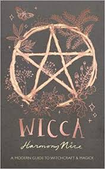
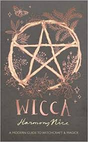

Seguir las leyes Wicca debemos,
en perfecto amor y perfecta confianza…
vivir y dejar vivir,
justamente dar y recibir.
Tres veces el círculo haz de traza
para a los espíritus malignos así hechar
siempre al hechizo finalizar;
Debe al decir, el hechizo rimar,
de toque gentil y suave mirada,
Vé en deosil al crecer la luna,
cantando a las brujas de la Runa;
Si la luna es nueva, de la Señora,
dos veces la mano besarás ahora;
Cuando en su cenit esté la luna
lo que desea tu corazón busca.
La ráfaga del Norte debes escuchar,
echar llave, las velas bajar;
Cuando del Sur el viento viene,
el amor te besará en la boca;
Cuando el viento sopla del Oeste,
las almas descarnadas no descansarán;
Cuando el viento sopla del este,
espera lo nuevo, arma la fiesta.
Nueve maderos en el caldero van,
rápido y lento quemarlas deberás;
El Saúco es el árbol de la dama,
no lo quemes, o maldito estarás.
Cuando la rueda comienza a girar
arder los fuegos de Beltane debes dejar;
Cuando a Yule a girado la rueda
enciende el tronco y el astado reina.
Cuida tu arbusto, árbol y flor,
bendecidos por la Señora son;
Donde las ondas del agua
van tira una piedra, sabrás la verdad;
Cuando una verdadera necesidad
tengas a la codicia ajena no servirás.
No pases tiempo con el tonto
si no quieres ser considerado su amigo,
feliz encuentro, feliz partida,
abrigan el corazón, encienden las mejillas.
La ley de las tres veces debes recordar,
malo tres veces, bueno tres veces;
Cuando la mala suerte te persiga
una estrella azul en tu frente lleva;
Siempre fiel en tu amor debes ser
o tu amor infiel te será.
Ocho palabras la Rede Wicca es:
*An Ye Harm None, Do What Ye Will*
«Sin dañar, haz lo que sea tu voluntad»
 
